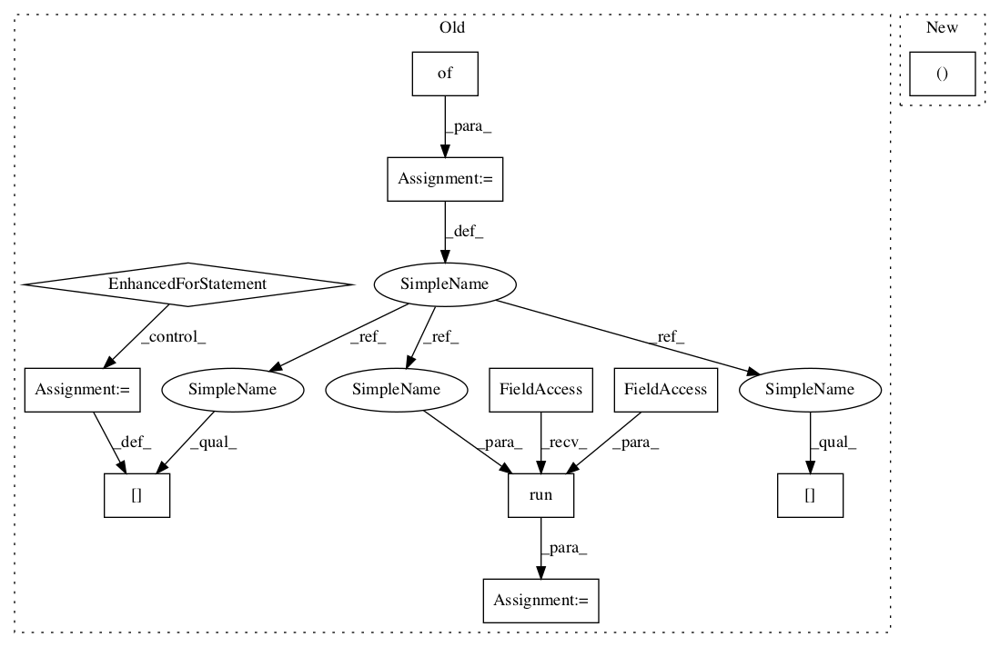

de7f5863338af5e1f92257cb29a6ca9a1c52c473,deepchem/metalearning/tests/test_maml.py,TestMAML,test_sine,#TestMAML#,12
Before Change
new_maml = dc.metalearning.MAML(learner, model_dir=maml.model_dir)
new_maml.fit(0, restore=True)
feed_dict = {}
for j in range(len(batch)):
feed_dict[new_maml._input_placeholders[j]] = batch[j]
feed_dict[new_maml._meta_placeholders[j]] = batch[j]
new_loss = np.average(
np.sqrt(new_maml._session.run(new_maml._loss, feed_dict=feed_dict)))
assert new_loss == loss1[-1]
After Change
new_maml = dc.metalearning.MAML(learner, model_dir=maml.model_dir)
new_maml.restore()
loss , outputs = new_maml.predict_on_batch(batch)
assert np.sqrt(loss) == loss1[-1]
// Do the same thing, only using the "restore" argument to fit().In pattern: SUPERPATTERN
Frequency: 3
Non-data size: 11
Instances Project Name: deepchem/deepchem
Commit Name: de7f5863338af5e1f92257cb29a6ca9a1c52c473
Time:
Author: null
File Name: deepchem/metalearning/tests/test_maml.py
Class Name: TestMAML
Method Name: test_sine
Project Name: deepchem/deepchem
Commit Name: de7f5863338af5e1f92257cb29a6ca9a1c52c473
Time:
Author: null
File Name: deepchem/metalearning/tests/test_maml.py
Class Name: TestMAML
Method Name: test_sine
Project Name: deepchem/deepchem
Commit Name: b68db1aaf6abe4d2cea8321cc6f1564228dd60f5
Time:
Author: null
File Name: deepchem/models/tensorgraph/models/seqtoseq.py
Class Name: SeqToSeq
Method Name: predict_from_sequences
Project Name: deepchem/deepchem
Commit Name: b68db1aaf6abe4d2cea8321cc6f1564228dd60f5
Time:
Author: null
File Name: deepchem/models/tensorgraph/models/seqtoseq.py
Class Name: SeqToSeq
Method Name: predict_embeddings